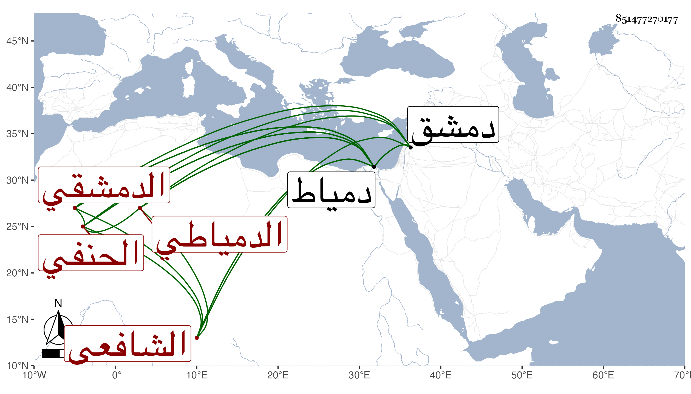

0902Sakhawi.DawLamic.ITO20230111-ara1.EIS1600.851477270177
Biography ID: 851477270177
أحمد بن إبراهيم بن محمد محيي الدين الدمشقي ثم الدمياطي الحنفي ثم الشافعي المجاهد ويعرف بابن النحاس . انجفل في الفتنة اللنكية من دمشق إلى المنزلة فأكرمه أهلها ثم تحول إلى دمياط فاستوطنها وكان يعرف الفرائض والحساب أتم معرفة بحيث كان يصرح باقتداره على إخراج طرف الحساب بالهندسة وصنف فيه مع المعرفة الجيدة بالفقه والمشاركة في غيره من الفنون ولكنه كان يقول أنه اشتغل في النحو فلم يفتح عليه فيه بشيء وهو صاحب مشارع الأسواق إلى مصارع العشاق ومثير الغرام إلى دار السلام في مجلد كبير ضخم حافل في معناه انتفع به الناس وتنافسوا في تحصيله وقرضه الولي العراقي وقد اختصره مؤلفه أيضا وله كتاب تنبيه الغافلين في معرفة الكبائر والصغائر والمناهي والمنكرات والبدع وكتاب بيان المغنم في الورد الأعظم وغير ذلك كاختصار الروضة لكنه لم يكمل وكان حريصا على أفعال الخير مؤثرا للخمول لا يتكبر بمعارفه بل ربما يتوهمه من لم يعرفه عاميا مع الشكالة الحسنة واللحية الجميلة والقصر مع اعتدال الجسد ، أكثر المرابطة والجهاد حتى قتل شهيدا بالقرب من الطية بأيدي الفرنج مع رفيقين له بعد أن قتلوا من الكفار جماعة في ثالث عشر جمادى الآخرة سنة أربع عشرة فلف الثلاثة في أكياب وحملوا إلى دمياط فدفنوا بها في أكيابهم بالقرب من الشيخ فتح بمكان واحد لكن جعل بينهم حواجز من خشب واجتمع عند دفنهم من لا يحصي كثرة ، وممن أخذ عنه ممن لقيته الشمس محمد بن الفقيه حسن البدراني وهو المفيد لترجمته وروى عنه كتابه في الجهاد رحمهما الله ونفعنا بهما ، وقد ذكره شيخنا في حوادث سنة أربع عشرة من أنبائه وقال أنه كان ملازما للجهاد بثغر دمياط وفيه فضيلة تامة وجمع كتابا حافلا في أحوال الجهاد وأنه قتل في المعركة مقبلا غير مدبر رحمه الله وإيانا .
